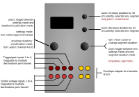

Piqued

Controls
Piqued presents quite a rich UI (user interface), which is harder to describe in words than it is to use. The following explanations should make sense as soon as you see the UI in action. Once experienced, the interface becomes quite intuitive, we think.
| Control | Function |
|---|---|
| Left encoder (turn) | In menu settings mode, elect the type of envelope. In envelope visualisation mode, select channel A to D to edit (all channels always active) |
| Left encoder (press) | Toggle between menu settings and envelope visualisation and segment duration settings. |
| Right encoder (turn) | Navigation mode: move up and down through the menu items (when in menu setting mode), or move back and forth between envelope segments (envelope visualisation/segment duration setting mode). Edit mode: increase or decrease the value being edited (segment durations when in envelope visualisation mode). |
| Right encoder (press) | Toggle between menu navigation (selection)/envelope segment selection mode and value editing mode |
| Right encoder (long press) | App selection menu |
| Up button (long press) | invoke screensave |
| Up button (press) | Increase duration for currently selected envelope segment for currently displayed envelope generator (A to D) by 32 (when in envelope visualisation mode only) |
| Down button (press) | Decrease duration for currently selected envelope segment for currently displayed envelope generator (A to D) by 32 (when in envelope visualisation mode only) |
Available settings (per-channel)
| Setting | Meaning |
|---|---|
| (envelope type) | the type of envelope (segment nomenclature is standard, with additions: A=attack, D=decay, S=sustain (level), R=release, L=loop point, with the number indication how many enevelope segments immediately before the L will be looped over). Available envelope types are described in the table below. |
Trigger input |
specifies which trigger/gate input, TR1 to TR4, is used to trigger or gate the envelope on the channel currently displayed. In addition, the end-of-cycle (EOC) of an envelope in one of the three other channels in Piqued can be specified as a trigger source. Thus, if Trigger input for channel B is set to A EOC, then chanel B will trigger as soon as the channel A envelope reaches it’s end-of-cycle. In this way, envelopes across the channels can be chained or sequenced, in potentially complex patterns. By such internal cross-channel triggering of an envelope with a gate shape at the end-of-cycle of another envelope, EOC gate outputs can be emulated. |
Tr delay mode |
sets the mode for the trigger delay. See notes below.If enabled, the trigger delay will postpone the “firing” of the envelope (that is, the commencement of the attack segment of the envelope) for the time set by Tr delay msecs and Tr delay secs (see below). Available trigger delay modes are Off, Queue and Ring. Queue means that subsequent triggers received while a delay period is active are added to a queue for later action, up to a maximum queue depth set by the Tr delay count setting (maximum 32). Further triggers during the delay period are ignored until the number of queued triggers falls below the value set by Tr delay count. Ring is similar except that triggers received after the queue is full will replace the final trigger in the queue. |
Tr delay count |
sets the number of trigger delays that will be stored or buffered for later processing. The maximum setting is 24 triggers that can be delayed. |
Tr delay msecs |
trigger delay in milliseconds (range 0 to 999 milliseconds). If you set a trigger delay of greater than zero, then the envelope for that channel will not “fire” (commence its attack segment) until the specified delay has elapsed. The delay in milliseconds and the delay in seconds are added together, allowing very fine control over the delay. The “countdown” time for the delayed trigger is shown as a fall bar on the righthand side of the trigger indicator for that channel (at the top of the display). |
Tr delay secs |
trigger delay in seconds (range 0 to 64 seconds) — see Tr delay msecs above. |
Eucl length |
sets the length of the Euclidean pattern (Off or range 2 to 32 in “beats”, where each beat is a received trigger/gate pulse) used to filter triggers for that channel. For a detailed explanation of Euclidean patterns and their use in rhythm generation, see this paper by Godfried Toussaint, or for a brief explanation, see this presentation. Eucl length defaults to Off, which means there is no filtering of triggers. |
| Euclidean pattern | is visible if Eucl length is not set to off. This displays the currently set Euclidean pattern. The current step is indicated by a small moving dash under the dashed line (one dash per step in the pattern, with the number of steps set by Eucl length). Pressing the R encoder invokes an “Euclidean editor”. When this editor is displayed, rotating the L encoder sets the fill setting for the pattern, and rotating the R encoder sets the offset or rotation of the patter. Both encoders can be used simultaneously. The fill setting is the number of beats in the pattern that let triggers through to “fire” the envelope. If the fill number is equal to or greater than the Euclidean pattern length number, then every incoming trigger will pass the Euclidean filter and fire the envelope for that channel. If the fill number is zero, then none shall pass, to quote Gandalf. The combination of pattern length (Eucl length) and number of active beats (the fill setting) within that pattern length uniquely determines the Euclidean pattern, using the Bjorklund algorithm. For example, if Eucl length is set to 8 and fill is set to 5, and the offset parameter is set to the default of 0, then the pattern will be 10110110, where 1 is an active beat (triggers are allowed to pass) and 0 is inactive (triggers are blocked). By setting offset to 1, the pattern becomes 01101101, if set to 2 the pattern becomes 11011010 and so on - that is, the pattern is rotated. |
Eucl reset |
defaults to - (off), but when set to a trigger input (TR1 to TR4), a trigger or gate on that input will cause the current position in the Euclidean pattern to skip back to the first position ie, it resets the step in the Euclidean pattern to 1. Note: if you set Eucl reset to the same trigger input used to trigger the enevlope for a particular channel (i.e. the Trigger input setting), and if Eucl reset div (see below) is set to the deafult of 1, then the envelope will either never fire or will always fire, because you will be constantly resetiting the Euclidean pattern to step 1 each time the envelope receives a trigger – and step 1 will be either 1 (fire) or 0 (don’t fire). In general, use a different trigger input for Eucl reset, and/or set Eucl reset div to greater than 1, or even better, to a value greater than the length of the Euclidean pattern. |
Eucl reset div |
is a divider for Eucl reset. For example, if set to 7, then the current step position in the Euclidean pattern is only reset to 1 after 7 triggers or gates have been received on the input specified by Eucl reset. It defaults to 1. |
CV1 -> |
sets the mapping from the CV1 input. The value on CV1 can be ignored (None) or sent to control the duration of one of: Att(ack), Dec(ay), Sus(tain) (level, not duration), Rel(ease), or ADR which affects the duration of all three of attack, decay and release simultaneously (†), or it can be set to control the Euclidean trigger filter parameters: Eleng (Euclidean pattern length), Efill (Euclidean pattern fill, Eoffs (Euclidean pattern offset/rotation), or the trigger delay time (Delay), or it can be set to control overall envelope amplitude (Ampl), or it can be set to Loops which controls the maximum number of enevelope loops (automatic re-triggers) for the looping envelope types. Note that when set to Eleng or Efill, negative voltages can be used to block all triggers. The input CV values are added to whatever is set for the duration/level or Euclidean parameters or trigger delay time or overall amplitude level or loop number via the respective menu settings. |
CV2 -> |
same as CV1 ->, but for the CV2 input |
CV3 -> |
same as CV1 ->, but for the CV3 input |
CV4 -> |
same as CV1 ->, but for the CV4 input |
Attack reset |
specifies the behaviour when a new trigger or gate (i.e. rising edge of the gate) is received while the attack segment of an envelope is still in progress. The available values are None (new triggers are ignored while the attack segment is active), SP (reset Segment and Phase, which resets the segment to attack, which is was anyway, and restarts the segment at phase zero, but retains the current envelope level when the trigger was received, thus avoiding sudden jumps in envelope level and consequent audible clicks or pops, as far as possible), SLP (reset Segment, Level and Phase — this also resets the level back to zero — this may result in clicks or pops, as the change in level is instantaneous), SL (reset Segment and Level - this resets the level but not the phase - this also results in sudden level jumps, but of a different type), P (reset Phase only, which for the attack segment is the same as resetting both segment to attack and resetting phase). The default is None, and in general, the expected behaviour will probably result by setting it to None or SP. The other options are offered to permit experimentation. A dual-channel oscilloscope which allows simultaneous visualisation of the trigger pulses and the resulting envelope shapes is very useful in working out the exact behaviour, which can be complex when the period of a train of triggers is about the same as the period for the envelope being triggered. See also the Att fall gt setting, immediately below, which also affects the behaviour of the envelope types with a sustain segment when triggered by short-duration triggers or pulses. |
Att fall gt |
specifies the behaviour for the ASR, ADSR and ADSAR envelope types when a trigger or gate signal falls (i.e. when a falling edge is detected) during the attack segment of the envelope. The choices are: Ignor (ignore), the default - the falling edge of the trigger/gate is ignored, and the attack segment continues; or Honor - the envelope proceeds immediately to the segment immediately following the sustain segment (i.e. the release segment for ASR and ADSR types, and the second attack segment for the ADSAR type). Honor was the hard-coded behaviour prior to v1.3. |
DecRel reset |
specifies the behaviour when a new trigger or gate (i.e. rising edge of the gate) is received while the decay or release segments of an envelope are still in progress. The available values are None (new triggers are ignored while the decay or release segment is active), SP (reset Segment and Phase, which resets the segment to attack and restarts the segment at phase zero, but retains the current envelope level when the trigger was received, thus avoiding sudden jumps in envelope level and consequent audible clicks or pops, as far as possible), SLP (reset Segment, Level and Phase - this also resets the level back to zero - this may result in clicks or pops, as the change in level is instantaneous), SL (reset Segment and Level - this resets the level but not the phase - this also results in sudden level jumps, but of a different type), P (reset Phase only, which doesn’t restart a new attack segment, instead, the current decay or release segment is restarted at phase 0 but at the current level, effectively extending it). The default is SP, and in general, the expected behaviour will probably result by setting it to None or SP. The other options are offered to permit experimentation. A dual-channel oscilloscope which allows simultaneous visualisation of the trigger pulses and the resulting envelope shapes is very useful in working out the exact behaviour, which can be complex when the period of a train of triggers is about the same as the period for the envelope being triggered. |
Gate high |
when set to Yes, forces the trigger/gate to high. This is useful when using the looping envelope types, which then just loop continuously, regardless of what is happen on their trigger/gate input, and thus they act as LFOs. |
Attack shape |
sets the shape of the attack segment for the currently displayed envelope. Available shapes are listed in the table below. |
Decay shape |
sets the shape of the decay segment for the currently displayed envelope. Available shapes are listed in the table below. |
Release shape |
sets the shape of the release segment for the currently displayed envelope. Available shapes are listed in the table below. |
Attack mult |
sets the duration multiplier for the attack segment(s). Range is 1 to 8192, which allows for very, very slow envelopes if desired. |
Decay mult |
sets the duration multiplier for the decay segment. Range is 1 to 8192. Note that you can still have a short attack but a very, very long decay or release, if desired, by setting different duration multipliers for each of attack, decay and release. |
Release mult |
sets the duration multiplier for the release segment. Range is 1 to 8192. |
Amplitude |
sets the overall amplitude for the envelope, from 0 (no amplitude) to 127 (full range). Defaults to 127. Use it in conjunction with voltage control overall envelope amplitude to dynamically vary the envelope amplitude (that is, the maximum envelope level). See also the related Sampled Ampl setting, immediately below. |
Sampled Ampl |
toggles whether the overall amplitude value for the envelope is set continuously, or whether the overall amplitude value is sampled when a new trigger/gate is received and then remains at that sampled value until a new trigger/gate is received. It defaults to off. |
Max loops |
sets the maximum number of loops (automatic re-triggers) for the looping envelope types, range 0 to 127. A setting of 0 (zero) means “loop forever” (or at least while the gate input is high - see above), while numbers greater than zero mean loop for that number of times, then stop (at least until a new gate signal is received. New gate signals reset the loop counter. Note that there is settable CV control over this parameter. This allows these looping envelope modes to become CVable burst generators, with CV control of the number of repetitions in each burst of envelopes, as well as the shape, duration and amplitude of the envelopes that make up the burst. By self-patching, one or more other channels can be used to dynamically vary the nature of the burst (eg declining amplitude and increasing duration of each repetition in the burst, simulating an echo if used to drive a VCA etc). |
Inverted |
values are Yes or No, and Yes inverts the envelope output. The output voltage is shifted so that the inverted envelope drops below zero volts (to about -0.5V) at it’s peak (or rather, at it’s trough, or nadir), but this can be trimmed using the Amplitude setting so that it drops to exactly 0V if desired. |
- (†) When the
ADRCV input target is used with looping enevlope modes, each channel of Piqued effectively becomes a voltage-controlled LFO (but not with 1V/octave scaling), with settable waveshapes (via the envelope segment shape settings).
| Envelope type | Description |
|---|---|
AD |
Attack-Decay: the attack segment commences on receipt of a trigger or on the rising edge of a gate signal, and the decay segment follows immediately after the attack segment has reached its peak, regardless of whether the gate or trigger signal is still high. |
ADSR |
Attack-Decay-Sustain-Release: just like every other ADSR envelope |
ADR |
Attack-Decay-Release: the attack segment commences on receipt of a trigger or on the rising edge of a gate signal, and the decay segment follows immediately after the attack segment has reached its peak. The sustain level is an inflection point for the decay - when the decay reaches the sustain level, the release segment immediately commences, regardless of whether the gate or trigger signal is still high. See the Tips section below on how to use the ADR mode as an AHR/AHD (attack-hold-release or attack-hold-decay) envelope generator with trigger signals. |
ASR |
Attack-Sustain-Release: the attack segment commences on receipt of a trigger or on the rising edge of a gate signal, and the envelope stays at maximum level for as long as the gate input for it remains high (sustain), and then commences the release segment as soon as the gate signal goes low. |
ADSAR |
is like an ADSR envelope, except that the attack segment re-triggers as soon as the sustain segment is finished, before proceeding to the release segment. |
ADAR |
is like the ADR envelope, except that the attack segment re-triggers as soon as the decay segment has finished, before going into the release segment. |
ADL2 |
is like the AD envelope, except that it automatically re-triggers (i.e loops) the entire envelope (i.e. both the A and D segments) for as long as the trigger/gate input for it is high (see also the Gate high and Max loops settings) |
ADRL3 |
is like the ADR envelope, except that it automatically re-triggers (i.e loops) the entire envelope (i.e. the A, D and R segments) for as long as the trigger/gate input for it is high (see also the Gate high and Max loops settings) |
ADL2R |
is like the ADR envelope, except that it automatically re-triggers (i.e loops) the A and D segments for as long as the trigger/gate input for it is high (see also the Gate high and Max loops settings), before proceeding to the R segment |
ADAL2R |
is like the ADAR envelope, except that it automatically re-triggers (i.e loops) the D and second A segments for as long as the trigger/gate input for it is high (see also the Gate high and Max loops settings), before proceeding to the R segment |
ADARL4 |
is like the ADAR envelope, except that it automatically re-triggers (i.e loops) the entire envelope for as long as the trigger/gate input for it is high (see also the Gate high and Max loops settings) |
Illustrations of these envelope types can be found here.
| Segment shape | Description |
|---|---|
Lin |
Linear (a straight line, equation x = t where t is time) |
Exp |
Exponential (equation x = 1 - e-4t) |
Quart |
Quartic (equation x = t3.32) |
Sine |
half a sine wave (equation x = sin(8 * pi * t) ) |
Ledge |
almost a square wave, but with rounded corners, when used for attack, gives an immediate (punchy) rise, then a plateau. When used for decay or release, it has a plateau before falling. |
Cliff |
similar to Ledge, but when used for attack, has a delay before rising, when used for decay or release, it falls immediately. |
Gate (v1.1) |
is used when gate outputs are desired. The value rises immediately to maximum in the attack segment, and the value falls immediately to minimum in the decay and release segments. In other words, a pulse is output. |
BgDip |
Big dipper - has one large bump on the way up or down. |
MeDip |
Medium dipper - has a medium sized dip on the way up or down. |
LtDip |
Little dipper - has a little dip (more a ledge) on the way up or down. |
Wiggl |
Wiggles - lots of wiggles on the way up or down. |
Inputs and outputs
Trigger input and CV1 to CV4 are mappable per-channel via the menu, as described above. Outputs for envelopes A to D appear on outputs A to D respectively.
Summary
Piqued is a a port of the envelope generator function from the open-source Mutable Instruments Peaks module. Piqued provides four independently-triggerable envelopes on output channels A to D, with independently mappable voltage-control via the CV1 to CV4 inputs over envelope duration and/or other parameters for each segment of each envelope. Triggers for each of the four envelopes can also be mapped from any of the four trigger inputs (TR1 to TR4). Segment shape (curves) can be set for each segment of each of the four envelopes. A variety of envelope types are available, also independently settable for each envelope, including repeating (looping) envelope types. The shape of each envelope can be visualised while setting parameters. There is also a “Euclidean trigger filter” included, which turns the Piqued app into a quad-channel Euclidean polyrhythm generator, that can output envelopes, not just gate/trigger signals. See the o_C videos page for some demonstrations of Piqued.
Screensaver display
The screen is divided into quadrants, each showing a rolling display of the output values on each of channels A to D. Superimposed on this rolling value line is a representation of the envelope for that channel, as it progresses through its segments.
Tips and tricks
- the ADR mode can also be used as an AHR (attack-hold-release, sometimes also called AHD (attack-hold-decay)) envelope generator. AHR envelope are useful when you want to generate an envelope with a flat sustain period, which usually requires a gate input with some duration. If you only have trigger signals, that is, short pulses, then you can create an AHR envelope by choosing ADR mode, and setting the sustain inflection point to 255 (maximum). By doing that, the decay segment falls from maximum value to… maximum value - in other words, it’s flat! The decay segment time/duration then sets the hold duration after a trigger is received. Also try setting the sustain level in ADR mode to something a little bit less than 255 (say 230), and set the decay shape to Wiggle. Now you have an AHR envelope with a wiggly and slightly downsloping plateau segment. Several variations on this theme are possible.